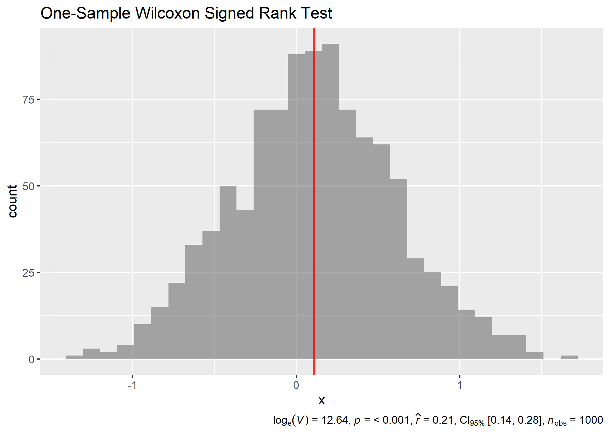
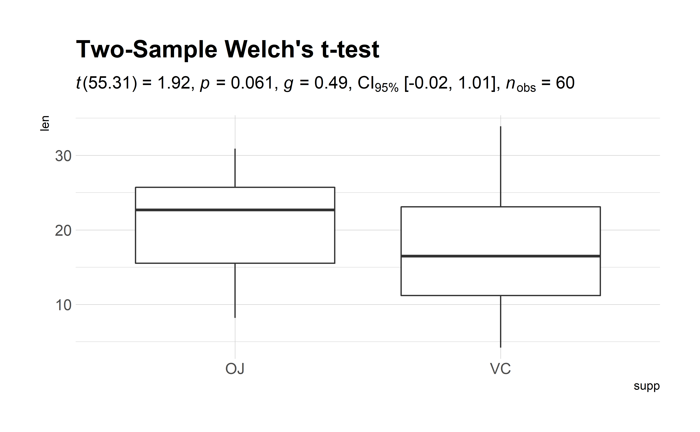
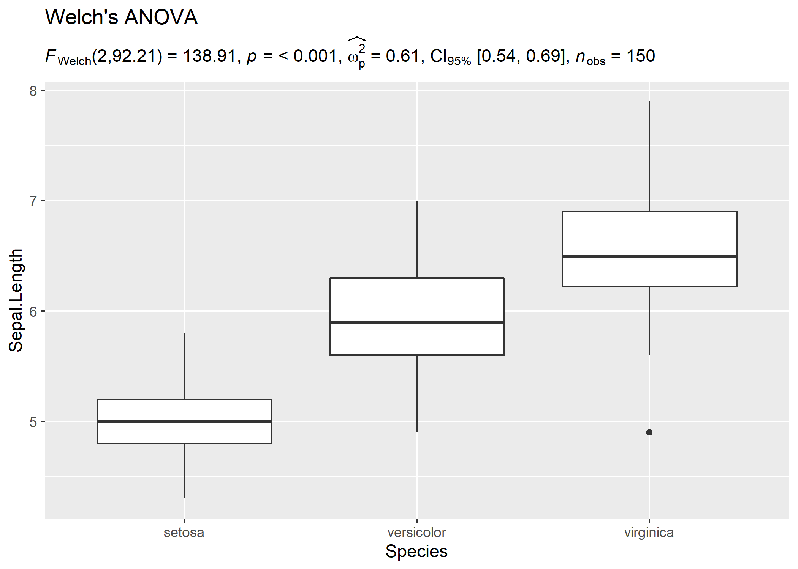
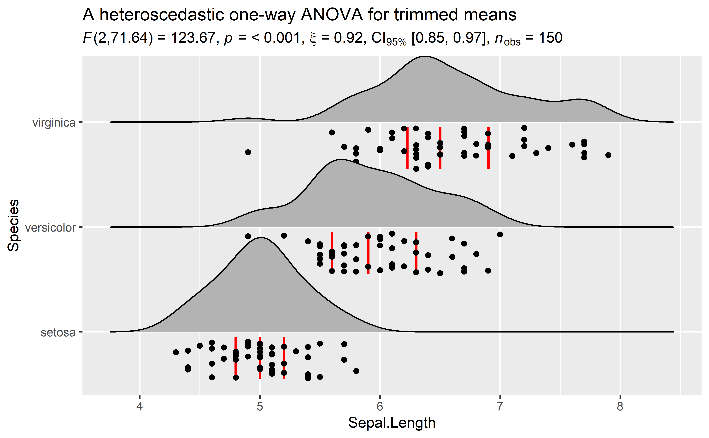
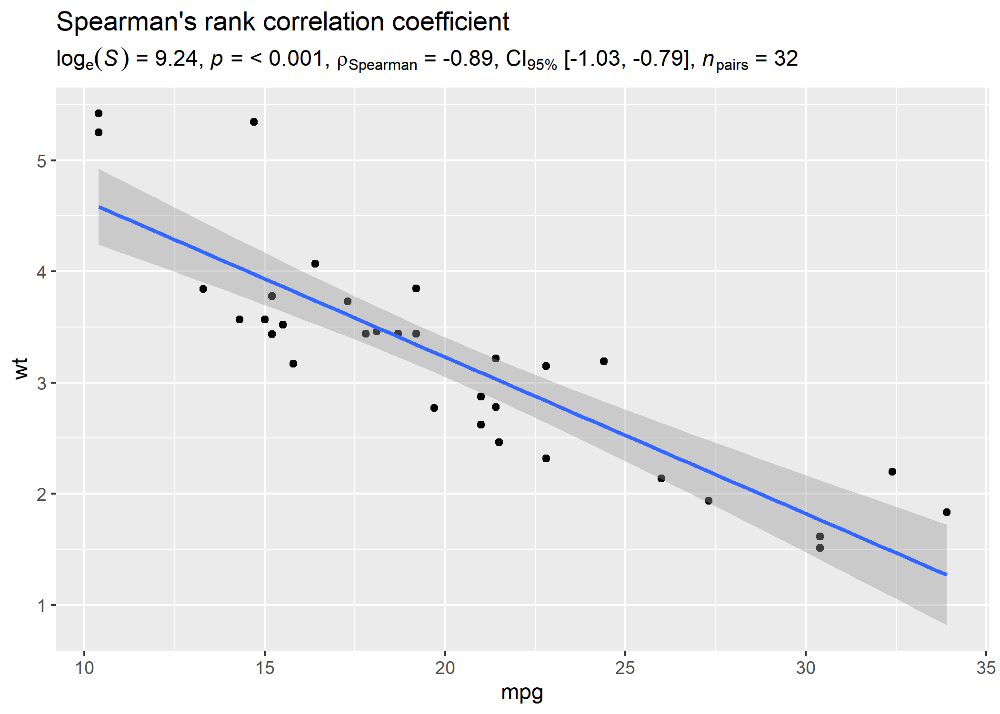
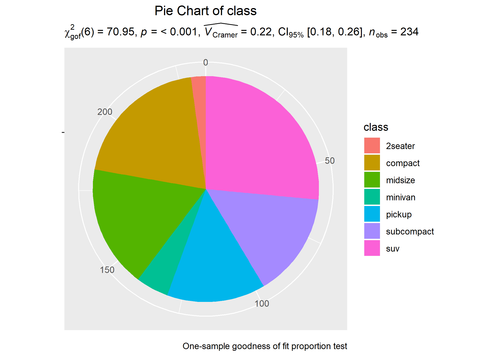

Primary functions
A list of primary functions in this package can be found at the package website: https://indrajeetpatil.github.io/statsExpressions/reference/index.html
Following are few examples of how these functions can be used.
Example: Expressions for one-sample t-test
# setup
set.seed(123)
library(ggplot2)
library(statsExpressions)
# create fake data
df <- data.frame(x = rnorm(1000, 0.1, 0.5))
# creating a histogram plot
p <- ggplot(df, aes(x)) +
geom_histogram(alpha = 0.5) +
geom_vline(xintercept = mean(df$x), color = "red")
# adding a caption with a non-parametric one-sample test
p + labs(
title = "One-Sample Wilcoxon Signed Rank Test",
caption = expr_t_onesample(df, x, type = "nonparametric")
)
#> Note: 95% CI for effect size estimate was computed with 100 bootstrap samples.
Example: Expressions for two-sample t-test
# setup
set.seed(123)
library(ggplot2)
library(hrbrthemes)
# create a plot
p <- ggplot(ToothGrowth, aes(supp, len)) + geom_boxplot() + theme_ipsum_rc()
# adding a subtitle with
p + labs(
title = "Two-Sample Welch's t-test",
subtitle = expr_t_parametric(ToothGrowth, supp, len)
)
Example: Expressions for one-way ANOVA
Let’s say we want to check differences in weight of the vehicle based on number of cylinders in the engine and wish to carry out Welch’s ANOVA:
# setup
set.seed(123)
library(ggplot2)
library(statsExpressions)
# create a boxplot
ggplot(iris, aes(x = Species, y = Sepal.Length)) + geom_boxplot() +
labs(
title = "Welch's ANOVA",
subtitle = expr_anova_parametric(iris, Species, Sepal.Length, messages = FALSE)
)
In case you change your mind and now want to carry out a robust ANOVA instead. Also, let’s use a different kind of a visualization:
# setup
set.seed(123)
library(ggplot2)
library(statsExpressions)
library(ggridges)
# create a ridgeplot
p <- ggplot(iris, aes(x = Sepal.Length, y = Species)) +
geom_density_ridges(
jittered_points = TRUE, quantile_lines = TRUE,
scale = 0.9, vline_size = 1, vline_color = "red",
position = position_raincloud(adjust_vlines = TRUE)
)
# create an expression containing details from the relevant test
results <- expr_anova_robust(iris, Species, Sepal.Length, messages = FALSE)
# display results on the plot
p + labs(
title = "A heteroscedastic one-way ANOVA for trimmed means",
subtitle = results
)
Example: Expressions for correlation analysis
Let’s look at another example where we want to run correlation analysis:
# setup
set.seed(123)
library(ggplot2)
library(statsExpressions)
# create a ridgeplot
p <- ggplot(mtcars, aes(x = mpg, y = wt)) +
geom_point() +
geom_smooth(method = "lm")
# create an expression containing details from the relevant test
results <- expr_corr_test(mtcars, mpg, wt, type = "nonparametric")
# display results on the plot
p + labs(
title = "Spearman's rank correlation coefficient",
subtitle = results
)
Example: Expressions for contingency table analysis
# setup
set.seed(123)
library(ggplot2)
library(statsExpressions)
# data
df <- as.data.frame(table(mpg$class))
colnames(df) <- c("class", "freq")
# basic pie chart
p <- ggplot(df, aes(x = "", y = freq, fill = factor(class))) +
geom_bar(width = 1, stat = "identity") +
theme(
axis.line = element_blank(),
plot.title = element_text(hjust = 0.5)
)
# cleaning up the chart and adding results from one-sample proportion test
p +
coord_polar(theta = "y", start = 0) +
labs(
fill = "class",
x = NULL,
y = NULL,
title = "Pie Chart of class",
subtitle = expr_onesample_proptest(df, class, counts = freq),
caption = "One-sample goodness of fit proportion test"
)
#> Note: 95% CI for effect size estimate was computed with 100 bootstrap samples.
You can also use these function to get the expression in return without having to display them in plots:
# setup
set.seed(123)
library(ggplot2)
library(statsExpressions)
# Pearson's chi-squared test of independence
expr_contingency_tab(mtcars, am, cyl, messages = FALSE)
#> paste(NULL, chi["Pearson"]^2, "(", "2", ") = ", "8.74", ", ",
#> italic("p"), " = ", "0.013", ", ", italic("V")["Cramer"],
#> " = ", "0.52", ", CI"["95%"], " [", "0.20", ", ", "0.75",
#> "]", ", ", italic("n")["obs"], " = ", 32L)